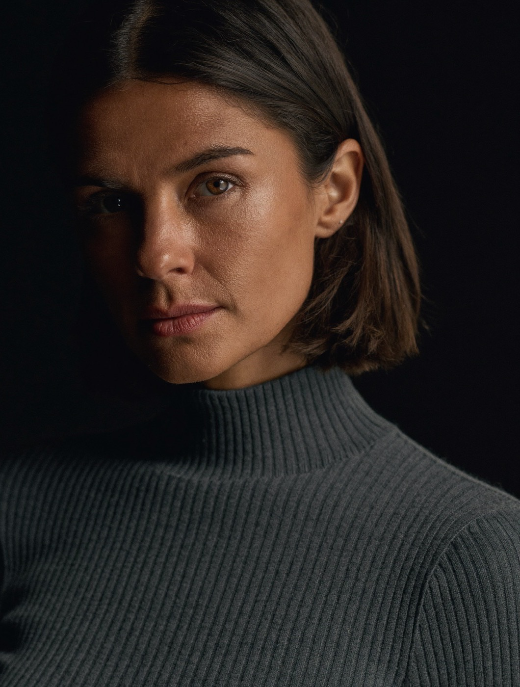

Describe a creator in a line and your own Claude composes the whole persona — person, voice, look, audience, pillars — then publishes it as a context Cast and every persona wrapp can use.

Published to CastNadia Okafor
34, Lisbon. Ex-barista turned home-espresso obsessive.
Voice
Dry & encouraging
Audience
New home-baristas
One line on the niche and vibe — or lend a brand, and Identity composes the persona that would create for it. Zero further input needed.
Person, voice, look, audience, pillars — three options each, one recommended, every one kept consistent with the person you pick. Steer any facet to redraft.
Lock all five and Identity publishes a persona context. Open Cast, lend it, and the creator arrives fully formed — no shared code, just the bridge.
34, Lisbon. Ex-barista turned home-espresso obsessive. Warm, exacting, funny about failure.
Voice
Dry & encouraging
talks you off the ledge of a bad shot
The look
Morning-window minimal
soft daylight, matte ceramics, close crops
Audience
New home-baristas
bought the machine, terrified of it
Pillars
Dial-in · Fix my shot · Worth it?
three she could post forever
Locking all five publishes a persona context — Identity produces it, Cast consumes it.
Runs on YOUR Claude and YOUR tools through Switchboard. The operator holds no key, runs no model, and never sees your data. The persona is composed by your model and published as a context only you can lend onward.
Free core, forever · composed on your own Claude, published as a context